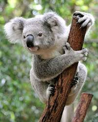
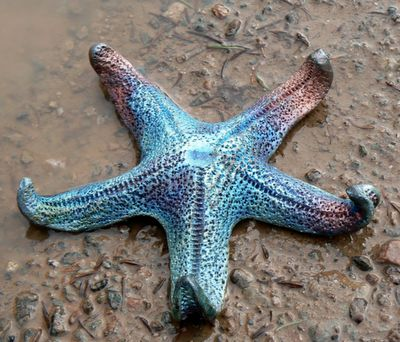

AnimalLoverz.org
dsf
Headlines

When an infant koala – called a joey – is born, it immediately climbs up to its mother’s pouch. Blind and earless, a joey uses its strong sense of touch and smell, as well as natural instinct, to find its way.
credit-www.natgeokids.com

Today's Fact
Ostrich has the biggest eyes in the whole animal kingdom. Its eye is bigger than its brain
credit-www.softschools.com

Although they are named "starfish", they are not related to fish at all. Starfish belong to the group of marine invertebrates which also include sea cucumber, sea urchin and sand dollar
credit-www.softschools.com